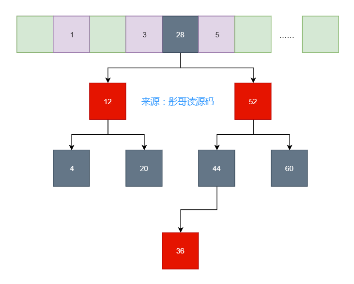

——日拱一卒，不期而至！
hash是我们工作中经常听到的词，比如哈希表、哈希函数、hashCode、HashTable、HashMap等等，那么它们之间到底有怎样的爱恨情仇呢？来一起看一看吧~~
讲哈希表之前，我们先来看看数据结构的鼻祖——数组。
数组比较简单，我就不多说了，大家都会都懂，见下图。
数组的下标一般从0开始，依次往后存储元素，查找元素也是一样，只能从头（或从尾）依次查找元素。
比如，要查找4这个元素，从头开始查找的话需要查找3次，从尾的话也需要2次。
上面讲了数组的缺点，查找某个元素只能从头或者从尾依次查找元素，直到匹配为止，它的均衡时间复杂是O(n)。
那么，利用数组有没有什么方法可以快速的查找元素呢？
聪明的程序员哥哥们想到一种方法，通过哈希函数计算元素的值，用这个值确定元素在数组中的位置，这样时间复杂度就能缩短到O(1)了。
比如，有5个元素分别为3、5、4、1，把它们放入到数组之前先通过哈希函数计算位置，精确放置，而不是像简单数组那样依次放置元素。
假如，这里申请的数组长度为8，我们可以造这么一个哈希函数为hash(x) = x % 8，那么最后的元素就变成了下图这样：
这时候我们再查找4这个元素，先算一下它的hash值为hash(4) = 4 % 8 = 4，所以直接返回4号位置的元素就可以了。
事情看着挺完美，但是，来了一个元素13，要插入的哈希表中，算了一下它的hash值为hash(13) = 13 % 8 = 5，AUWC，它计算的位置也是5，可是5号已经被人先一步占领了，怎么办呢？
这就是哈希冲突，本文来源于工从号彤哥读源码。
因为我们申请的数组是有限长度的，把无限的数字映射到有限的数组上早晚会出现冲突，即多个元素映射到同一个位置上。
好吧，既然出现了哈希冲突，那么我们就要解决它，必须干！
How to？
既然5号位置已经有主了，那我元素13认怂，我往后挪一位，我到6号位置去，这就是线性探测法，当出现冲突的时候依次往后挪直到找到空位置为止。
然鹅，又来了个新元素12，算得其hash值为hash(12) = 12 % 8 = 4，我TMDRL，要往后移3次到7号位置才有空位置，这就导致了插入元素的效率很低，查找也是一样的道理，先定位的4号位置，发现不是我要找的人，再接着往后移，直到找到7号位置为止。
使用线性探测法有个很大的弊端，冲突的元素往往会堆积在一起，比如，12号放到7号位置，再来个14号一样冲突，接着往后再数组结尾了，再从头开始放到0号位置，你会发现冲突的元素有聚集现象，这就很不利于查找了，同样不利于插入新的元素。
这时候又有聪明的程序员哥哥提出了新的想法——二次探测法，当出现冲突时，我不是往后一位一位这样来找空位置，而是使用原来的hash值加上i的二次方来寻找，i依次从1，2，3...这样，直到找到空位置为止。
还是以上面的为例，插入12号元素，过程是这样的，本文来源于工从号彤哥读源码：
这样就能很快地找到空位置放置新元素，而且不会出现冲突元素堆积的现象。
然鹅，又来了新元素20，你瞅瞅放哪？
AYMY，发现放哪都放不进去了。
研究表明，使用二次探测法的哈希表，当放置的元素超过一半时，就会出现新元素找不到位置的情况。
所以又引出一个新的概念——扩容。
已放置元素达到总容量的x时，就需要扩容了，这个x时又叫作扩容因子。
很显然，扩容因子越大越好，表明哈希表的空间利用率越高。
所以，很遗憾，二次探测法无法满足我们的目标，扩容因子太小了，只有0.5，一半的空间都是浪费的。
这时候又到了程序员哥哥们发挥他们聪明特性的时候了，经过996头脑风暴后，又想出了一种新的哈希表实现方式——链表法。
不就是解决冲突嘛！出现冲突我就不往数组中去放了，我用一个链表把同一个数组下标位置的元素连接起来，这样不就可以充分利用空间了嘛，啊哈哈哈哈~~
嘿嘿嘿嘿，完美△△。
真的完美嘛，我是一名黑客，我一直往里面放*%8=4的元素，然后你就会发现几乎所有的元素都跑到同一个链表中去了，MD，最后的结果就是你的哈希表退化成了单链表，查询插入元素的效率都变成了O(n)。
此时，当然有办法，扩容因子干啥滴？
比如扩容因子设置为1，当元素个数达到8个时，扩容成两倍，一半的元素还在4号位置，一半的元素去到了12号位置，缓解了哈希表的压力。
然鹅，依旧不是很完美，本文来源于工从号彤哥读源码。
聪明的程序员哥哥们这次开启了一次长大9127的头脑风暴，终于搞出了一种新的结构——链表树法（当然，这个名字是彤哥起的）。
虽然上面的扩容在元素个数比较少的时候能解决一部分问题，整体的查找插入效率也不会太低，因为元素个数少嘛。
但是，黑客还在攻击，元素个数还在持续增加，当增加到一定程度的时候，总会导致查找插入效率特别低。
所以，换个思路，既然链表的效率低，我把它升级一下，当链表长的时候升级成红黑树怎么样？
嗯，神舟行，我看行，说干就干。

嗯，不错不错，妈妈再也不怕我遭到黑客攻击了。
所以，到这就结束了吗？
你想多了，NM，每次扩容都要移动一半的元素好么，这样真的好么好么好么？
程序员哥哥们太难了，这次经过了12127的头脑风暴，终于想出个新玩意——一致性Hash。
一致性Hash更多地是运用在分布式系统中，比如说Redis集群部署了四个节点，我们把所有的hash值定义为0~2^32个，每个节点上放置四分之一的元素。
此处只为举例，实际Redis集群的原理是这样的，具体数值不是这样的。
此时，假设需要给Redis增加一个节点，比如node5，放在node3和node4中间，这样只需要把node3到node4中间的元素从node4移动到node5上面就行了，其它的元素保持不变。
这样，就增加了扩容的速度，而且影响的元素比较少，大部分请求几乎无感知。
怎么样，是不是很精彩？
想系统地学习更多编程姿势嘛，来我的工从号“彤哥读源码”一起浪啊~